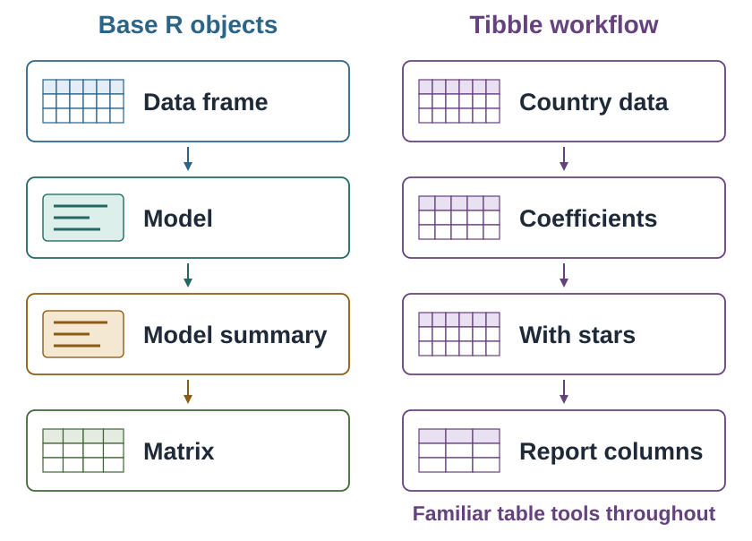

library(tidyverse)2 Objects in R
We have used R to calculate with numbers, work with text, and store results under names. A research project brings these pieces together: observations, measurements, summaries, and fitted models. How should we organize them so that one step can build on another?
R supports several kinds of objects. This chapter gives a short tour, then explains why this book mainly works with tibbles, a form of data frame. You only need the skills from the first chapter: running code, loading packages, and assigning results with <-.
By the end, you will be able to:
- Recognize the difference between a vector, a table, and a list.
- Explain what a tibble preview shows and what it leaves undisplayed.
- Describe why a common table structure helps connect an analysis.
2.1 Different ways to hold information
An object is something R can work with, such as a number, a table, or a function. A name lets us refer to a stored object again. Its structure determines how its pieces fit together; a function determines what operation we perform on it.
A single value, such as 1, is the smallest starting point in our picture. We can think of it as zero-dimensional (0D) information. R stores it as a vector of length one. A vector extends that picture to an ordered sequence of values. An ordinary numeric vector might contain the life expectancies of several countries; a character vector might contain their names.
A data frame keeps columns together in a table. Each column can have a different type: names can be text while life expectancy is numeric. Columns have the same number of entries, so each row can keep one country’s measurements together. A tibble is a form of data frame, with conventions that make these tables convenient to inspect and work with.
A list can hold different kinds of objects together, including objects of different sizes. A matrix is a rectangular structure whose values share one type; an array can extend that regular structure to more dimensions. Nested lists hold objects inside other lists. Nesting describes a hierarchy, rather than the fixed dimensions of an array.
Figure 2.1 provides a map of these possibilities. Read it as an orientation, not a set of definitions to memorize. The examples 1, "A", and TRUE represent numeric, character, and logical values. For the next several chapters, our main concern is the table and its columns. The optional Programming part returns to these structures with construction and extraction examples in Chapter 28.

2.2 Read the same data in two forms
A wide table can be awkward to read even when it contains only a few observations. We will compare the same ten counties in two forms, keeping all 28 variables. Load the tidyverse packages installed in the first chapter:
For this printing example, we use midwest, a packaged dataset supplied by ggplot2, one of the tidyverse packages. It contains 437 counties and 28 variables. No download or preparation is needed. ggplot2::midwest names the dataset in that package; head() takes its first ten rows because we supply 10 as its second argument, keeping every column.
The package notes incomplete variable documentation. We use these records only to compare printing, not to interpret their measures or draw substantive conclusions.
First save and inspect the ten-row tibble returned by head():
midwest_ten <- head(ggplot2::midwest, 10)
midwest_ten# A tibble: 10 × 28
PID county state area poptotal popdensity popwhite popblack popamerindian
<int> <chr> <chr> <dbl> <int> <dbl> <int> <int> <int>
1 561 ADAMS IL 0.052 66090 1271. 63917 1702 98
2 562 ALEXAN… IL 0.014 10626 759 7054 3496 19
3 563 BOND IL 0.022 14991 681. 14477 429 35
4 564 BOONE IL 0.017 30806 1812. 29344 127 46
5 565 BROWN IL 0.018 5836 324. 5264 547 14
6 566 BUREAU IL 0.05 35688 714. 35157 50 65
7 567 CALHOUN IL 0.017 5322 313. 5298 1 8
8 568 CARROLL IL 0.027 16805 622. 16519 111 30
9 569 CASS IL 0.024 13437 560. 13384 16 8
10 570 CHAMPA… IL 0.058 173025 2983. 146506 16559 331
# ℹ 19 more variables: popasian <int>, popother <int>, percwhite <dbl>,
# percblack <dbl>, percamerindan <dbl>, percasian <dbl>, percother <dbl>,
# popadults <int>, perchsd <dbl>, percollege <dbl>, percprof <dbl>,
# poppovertyknown <int>, percpovertyknown <dbl>, percbelowpoverty <dbl>,
# percchildbelowpovert <dbl>, percadultpoverty <dbl>,
# percelderlypoverty <dbl>, inmetro <int>, category <chr>
The header reports ten rows and 28 columns. head() returned a smaller table; the packaged midwest still contains 437 counties. This example keeps ten rows so that we can follow the same records in both displays.
as.data.frame() takes this table and returns it as an ordinary data frame. Assignment saves it as midwest_df; typing the name prints it:
midwest_df <- as.data.frame(midwest_ten)
midwest_df PID county state area poptotal popdensity popwhite popblack
1 561 ADAMS IL 0.052 66090 1270.9615 63917 1702
2 562 ALEXANDER IL 0.014 10626 759.0000 7054 3496
3 563 BOND IL 0.022 14991 681.4091 14477 429
4 564 BOONE IL 0.017 30806 1812.1176 29344 127
5 565 BROWN IL 0.018 5836 324.2222 5264 547
6 566 BUREAU IL 0.050 35688 713.7600 35157 50
7 567 CALHOUN IL 0.017 5322 313.0588 5298 1
8 568 CARROLL IL 0.027 16805 622.4074 16519 111
9 569 CASS IL 0.024 13437 559.8750 13384 16
10 570 CHAMPAIGN IL 0.058 173025 2983.1897 146506 16559
popamerindian popasian popother percwhite percblack percamerindan
1 98 249 124 96.71206 2.57527614 0.1482826
2 19 48 9 66.38434 32.90043290 0.1788067
3 35 16 34 96.57128 2.86171703 0.2334734
4 46 150 1139 95.25417 0.41225735 0.1493216
5 14 5 6 90.19877 9.37285812 0.2398903
6 65 195 221 98.51210 0.14010312 0.1821340
7 8 15 0 99.54904 0.01878993 0.1503194
8 30 61 84 98.29813 0.66051770 0.1785183
9 8 23 6 99.60557 0.11907420 0.0595371
10 331 8033 1596 84.67331 9.57029331 0.1913018
percasian percother popadults perchsd percollege percprof
1 0.37675897 0.18762294 43298 75.10740 19.63139 4.355859
2 0.45172219 0.08469791 6724 59.72635 11.24331 2.870315
3 0.10673071 0.22680275 9669 69.33499 17.03382 4.488572
4 0.48691813 3.69733169 19272 75.47219 17.27895 4.197800
5 0.08567512 0.10281014 3979 68.86152 14.47600 3.367680
6 0.54640215 0.61925577 23444 76.62941 18.90462 3.275891
7 0.28184893 0.00000000 3583 62.82445 11.91739 3.209601
8 0.36298721 0.49985123 11323 75.95160 16.19712 3.055727
9 0.17116916 0.04465282 8825 72.27195 14.10765 3.206799
10 4.64268169 0.92241006 95971 87.49935 41.29581 17.757448
poppovertyknown percpovertyknown percbelowpoverty percchildbelowpovert
1 63628 96.27478 13.151443 18.01172
2 10529 99.08714 32.244278 45.82651
3 14235 94.95697 12.068844 14.03606
4 30337 98.47757 7.209019 11.17954
5 4815 82.50514 13.520249 13.02289
6 35107 98.37200 10.399635 14.15882
7 5241 98.47802 15.149781 13.78776
8 16455 97.91729 11.710726 17.22546
9 13081 97.35060 13.875086 17.99478
10 154934 89.54429 15.572437 14.13223
percadultpoverty percelderlypoverty inmetro category
1 11.009776 12.443812 0 AAR
2 27.385647 25.228976 0 LHR
3 10.852090 12.697410 0 AAR
4 5.536013 6.217047 1 ALU
5 11.143211 19.200000 0 AAR
6 8.179287 11.008586 0 AAR
7 12.932331 21.085271 0 LAR
8 10.027037 9.525052 0 AAR
9 11.914343 13.660180 0 AAR
10 17.562728 8.105017 1 HAUAt the book’s normal print width, these 28 columns spread across five blocks. The row numbers repeat in each block. Following one county across its variables requires matching those row numbers while moving through the output.
Now convert the same example to a tibble. as_tibble() preserves all ten counties, their 28 variables, their order, and their stored values:
midwest_tb <- as_tibble(midwest_df)
midwest_tb# A tibble: 10 × 28
PID county state area poptotal popdensity popwhite popblack popamerindian
<int> <chr> <chr> <dbl> <int> <dbl> <int> <int> <int>
1 561 ADAMS IL 0.052 66090 1271. 63917 1702 98
2 562 ALEXAN… IL 0.014 10626 759 7054 3496 19
3 563 BOND IL 0.022 14991 681. 14477 429 35
4 564 BOONE IL 0.017 30806 1812. 29344 127 46
5 565 BROWN IL 0.018 5836 324. 5264 547 14
6 566 BUREAU IL 0.05 35688 714. 35157 50 65
7 567 CALHOUN IL 0.017 5322 313. 5298 1 8
8 568 CARROLL IL 0.027 16805 622. 16519 111 30
9 569 CASS IL 0.024 13437 560. 13384 16 8
10 570 CHAMPA… IL 0.058 173025 2983. 146506 16559 331
# ℹ 19 more variables: popasian <int>, popother <int>, percwhite <dbl>,
# percblack <dbl>, percamerindan <dbl>, percasian <dbl>, percother <dbl>,
# popadults <int>, perchsd <dbl>, percollege <dbl>, percprof <dbl>,
# poppovertyknown <int>, percpovertyknown <dbl>, percbelowpoverty <dbl>,
# percchildbelowpovert <dbl>, percadultpoverty <dbl>,
# percelderlypoverty <dbl>, inmetro <int>, category <chr>
The heading reports ten rows and 28 columns. All ten counties appear together. At this width, the body shows the first nine columns; the footer identifies the other 19 variables and their types. The tibble abbreviates the display rather than removing data.
Type cues appear below the column names. <int> identifies integer values, <dbl> identifies double-precision numbers, and <chr> identifies text. Some county names are abbreviated, and some numbers display fewer digits. Their full stored values remain unchanged.
A tibble is still a data frame. Its compact display trades some visible detail for an overview that is easier to scan. To read an abbreviated label in full, use the viewer introduced later in Chapter 7. Both displays contain the same data; consistent table structure and reusable operations provide a further reason to use tibbles, beyond their printing style.
2.3 Why this book uses tibbles
Readable printing is one benefit. Another is continuity: we can organize both data and results as tables, then use familiar table tools on them.
Suppose we study how country income and life expectancy vary together. A statistical model describes that relationship. We do not need to understand the calculation yet; in Figure 2.2, focus on the objects we work with.
The left route moves through a data frame, a fitted model, a model summary, and a matrix of numerical results. These objects have different structures, so accessing their contents requires different operations. The right route brings the model’s results into a tibble. We can then add a column of significance stars and choose the columns to report, using ordinary table operations. Each displayed result on the right is a tibble.
On a narrow screen, scroll sideways to compare both routes.

Both routes fit the same relationship and give the same estimates. The advantage illustrated on the right is what we can do next: add information, rearrange columns, or export results with the same kinds of tools used on the original data. This is the habit the book develops: work with tables and keep results in a form that supports the next step.
The first transition on the right combines fitting the model and converting its results to a tibble. A model object is still created along the way; the figure shows the tables we keep working with. The stars are reporting labels based on p-values, not a measure of an effect’s size or importance. Their interpretation belongs in the later analysis chapters.
2.4 Where we go next
Most of the book works with tables. Their columns are vectors, so working with a table often means working with the values in one or more vectors. The following parts approach these objects at different levels:
- Manipulate tables begins with selecting columns, then sorting and selecting rows within a single table. The pipe connects these operations.
- Explore variables uses printed previews, a viewer, frequency tables, numerical summaries, and plots to examine a dataset. The selection language and pipe are already familiar when we need them here.
- Manipulate variables works inside the columns. We calculate with numeric vectors, test conditions, and work with text, categories, and dates while keeping values aligned with their observations.
- Manage datasets covers reading and saving tables, changing a table’s shape, and combining multiple tables by matching records.
- Analyze variables uses prepared tables to make plots, conduct tests, and fit models. Models create other kinds of objects; their results can often be organized into tables for interpretation and reporting.
- Programming, an optional part, returns to vectors, lists, matrices, and other structures in more detail.
2.5 Review
- Objects organize information in different ways; tables keep related column values together.
- A tibble is a form of data frame, with a compact preview and visible type cues.
- A preview can omit rows from the display without removing them from the data.
- Many table operations work together, letting us build an analysis from familiar steps.
Next, Chapter 3 introduces the country dataset and shows how to choose the columns needed for a task.
2.6 Exercises
Use the objects created in Section 2.2. These questions ask you to read the displays and explain what the structures allow; no new commands are needed.
- Follow a printed block. Find the row for ADAMS county in Illinois in
midwest_df. Explain why its row number appears in several blocks. Does each block add another county? - Read the tibble. Use the header, column type cues, and footer of
midwest_tbto report its dimensions and explain where the undisplayed variables are. Did converting it remove counties or columns? - Reuse table operations. In Figure 2.2, suppose we want fewer report columns and a different reading order. Which objects on the right can use ordinary table operations? Explain why we cannot assume that the same operations work directly on every object on the left.
Worked answers
TipFollow a printed block
ADAMS in Illinois is row 1. The same row number recurs because the 28 variables are printed in blocks at the normal width. Match row 1 across blocks to follow that county’s attributes. There are still ten counties; another block supplies more variables for the same records.
TipRead the tibble
The header reports ten rows and 28 columns. Type cues such as <int>, <dbl>, and <chr> describe the displayed columns. At the book’s normal width, the body shows nine variables and the footer lists the other 19. The compact display does not delete their values. Both converted objects retain the same ten counties, 28 columns, and stored measurements.
TipReuse table operations
Every checkpoint on the right is a tibble, so table operations can choose and rearrange its columns. The left contains a data frame, a fitted model, a model summary, and a matrix. Their different structures require appropriate operations. The figure’s right route converts the model results into a table before continuing; it does not claim that the fitted model itself is a tibble.